我自杀前24小时
作者：howMandy青 - 知乎
本文内容完全没有一点虚构！为了防止模仿，本文故意没有写得很详细！多图预警！
本文旨在传播正能量，请一定看到最后，前面可能比较负能！
我是个20岁的医学女孩。2022年2月28日14:30，当时距离我的死期，3月1日14:30，还有正正好好24小时。
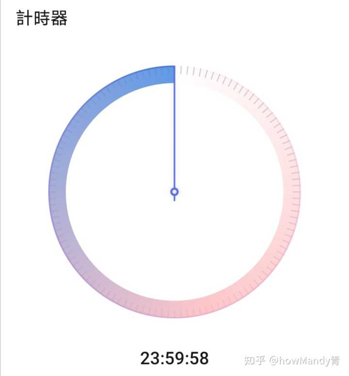
我长期患有严重的抑郁症，两个月前开始病情迅速恶化。大去之期将至，我用手机时钟给自己定了一个计时器，我生命的倒计时。现在，它走到了24:00:00剩余。
回到死前5天 现在是2022年2月23日14:30。我挑选了一间没人的宿舍，穿得美美的，用手机录制下我给家人的视频遗书。然后，打印并填写了《中国人体器官捐献登记表》和《中国人体器官捐献志愿书》，另外拿了一张白纸，在正中央写着12个字：无需抢救，请勿救治，感谢理解。这三张纸被我放进了抽屉备用。
死前4天零3小时 现在是2月24日。我做完了最后一个游戏视频《我的世界服主学院6》（其实因为实在太心累所以用文章代替了视频），在B站投稿，过审，然后默默关掉B站。
死前3天 今天是2月26日。上午我接上我的好闺蜜，去2家不同的医院开到了2盒管制药A。然而她天真地以为我只是懒得常跑医院所以多开一盒药。此时我已经攒够7盒药A和之前遗留的5粒药B，这两种药物同时使用，会相互增效……为防止效仿，本文所有药名均打码。
下午我史无前例地请她吃了一顿很贵的寿喜锅。然而她没有察觉到，这是我们的告别晚宴……
死前48小时 现在是2月27日下午2点半。我在我的Minecraft服务器里举办了一个小活动。我开设了一个Minecraft基岩版服务器，我是大家眼中德高望重的“小青姐”。大家不知道的是，这是我最后一次给服务器的朋友们带来欢乐了。
死前31小时 现在是2月28日早上7点半。匆忙起床后出发去上课。上的是医学英语，很无聊，想快点下课。
死前24小时 现在是下午2点半。匆忙结束打盹出发去上课。上的是医学影像学，很无聊，想快点下课。
课间，我问了闺蜜一个问题：假如你明天就要死了，生命只剩24小时，今天你会怎么过？她随口说，该怎么过怎么过呗。该上课上课，该吃饭吃饭，该睡觉睡觉。很快我们就转移到了其他话题。
死前21.5小时 现在是下午5点，下课，为我的另外3个朋友点了喜茶，我请客。她们很奇怪地问我，为什么我今天突然请客了。我笑而不语。我在喜茶杯贴给她们留言，“感谢你们一路陪伴”。想必她们会感觉很奇怪吧。
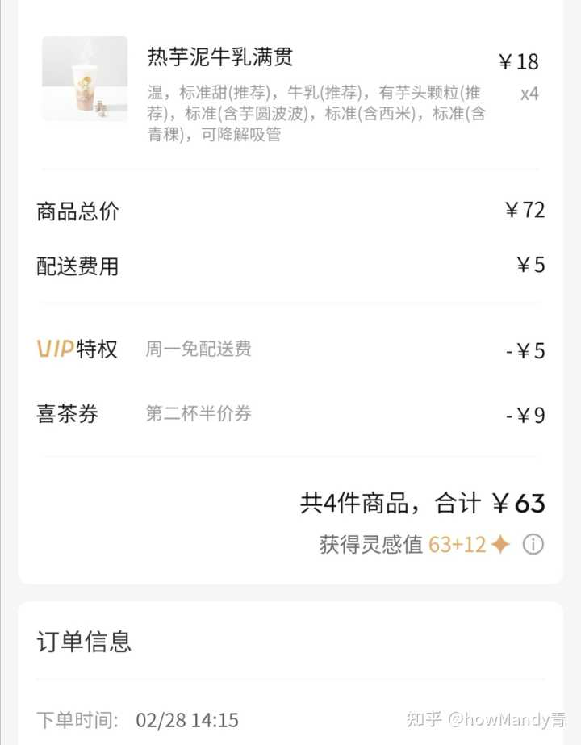
死前18小时 现在是晚上8点半。刷B站，然而只是盯着首页，没有点进任何视频。对我来说做什么都得不到哪怕一丝一毫的快乐，即使是刷短视频这样强成瘾性的高强度刺激。
死前16小时 现在是晚上10点半。和往常一样按时上床睡觉。这是我的最后一晚了。我的内心十分平静。
死前13小时 现在是3月1日凌晨1点半。我和往常一样遭受着失眠的折磨。我在B站发了这样一条动态。想必这也是最后一条动态了吧。

死前7小时 现在是早上7点半。匆忙起床后，按我的计划服下治疗量的药物C（没有过量），出发去上课。上的是诊断学实习，也是我第一次进病房实习，病床上，躺着一名虚弱却和蔼的老太太。很无聊，想快点下课。我暗暗祈祷，下午我可不要像她一样躺在病床上。我要去的地方，是天堂。
死前4小时 现在是早上10点半。回到寝室。和往常一样，不知道干什么（因为干什么都得不到快感），在寝室坐立不安地踱步（精神运动性激越）。一踱就是两个小时。这坐立不安，仅仅是抑郁症的症状，不是因为我对于死亡的害怕——相反我的内心十分坦然，甚至满脑子想的是“怎么还有4个小时啊我已经迫不及待了”。
饭点到了，我和往常一样又没吃饭。我吃饭吃一点吐一点，睡觉睡一会醒一会，像极了一个重病号——亦或者，本来就是。
死前2小时 现在是中午12:30。我登上我的Minecraft服务器，把我身上的东西连同末影箱的物品都放到了一个小木桶里，立牌子写上“我的遗物”。这是我最后一次登录我的服务器了……
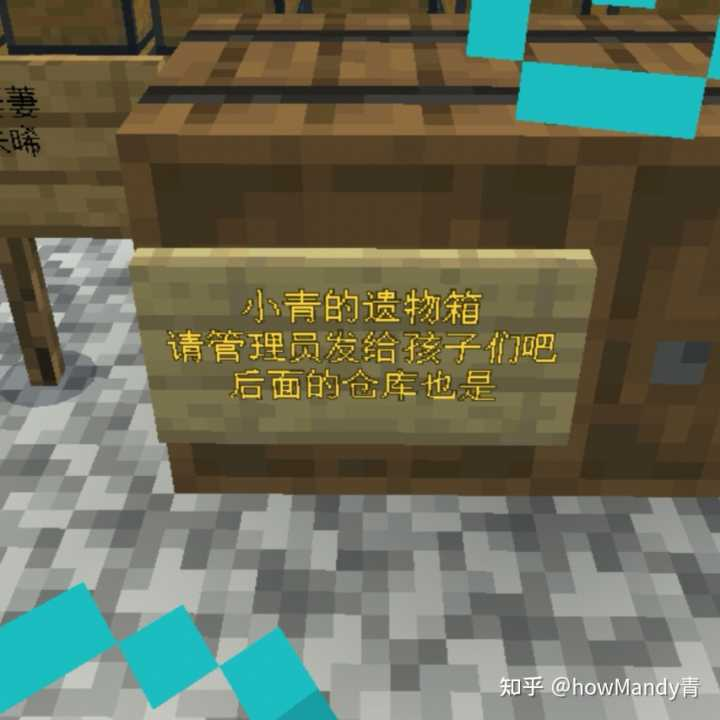
为什么现在才放遗物呢？我怕放早了被发现，就死不成了。
然后我把QQ和B站上事先写好的定时讣告点了“发送”。不出意外7天后大家就会听闻我的死讯。
死前90分钟 现在是下午1点。我喝下了第一瓶药物D。这种药物是体内某氧化酶系的强抑制剂，能减少药物A和B的代谢，使其血药浓度陡增几十倍。
室友她们已经午睡睡着了，我开始用生理盐水配置药物A和B的溶液。这个生理盐水还是兽用的，因为人用的不准卖。我一颗一颗一颗地从药板扣出7盒药物A和5粒药物B，配置溶液后充入注射器备用。药片一颗颗地落入洁净一次性塑料杯底，发出哒哒哒的声音，但我的内心仍然平静如水。我很清楚地知道我是在自我毁灭。
死前30分钟 现在是下午2点。我喝下了第二瓶药物D并忍着强烈的刺激性气味喝下了第一瓶药物E。药物E的达峰时间为30分钟，也就是说30分钟后我打药的时候，药物E的血药浓度也恰好最高。药物A、B与药物E配伍，会增加呼吸抑制的概率。喝完我就找地方躲着了，等室友们醒来，都去上课了，再回寝室。
到现在为止，我还没有生命危险，随时可以取消我的“旅程”。但我没有一丝丝悔意。我去意已决……
死前10分钟 现在是下午14:20。我回到了寝室，头已经开始有些发晕，但仍有行动能力。我取出要用的器材，双手消毒，然后取出了先前准备的那3张纸，放在我的身边，静静等待那一刻的到来。
死前2分钟 现在是下午14:28。我喝下第二瓶药物E，做好了静脉穿刺，随时可以推药。
死前10秒 现在是下午14:29:50。这最后的两分钟过得真快。我把早就编辑好的短信遗书，按下发送键，发送给了我的精神科医生。（短信无法定时发送）
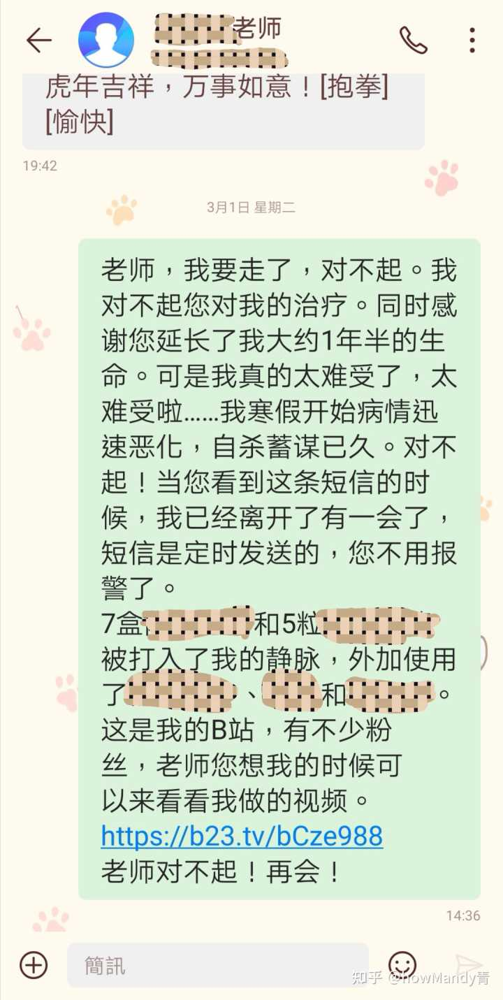
死前0秒
现在是2022年3月1日 14:30:00。我手机上的计时器走到了零，发出“滴滴——滴滴——滴滴——”的声音。这是我生命结束的声音，是前往天堂的列车的发车铃。说时迟，那时快呀，这一刻我等了好久好久，现在，终于终于来了。
如果你知道你还有24小时就要死了，你会做什么？这个问题我刷到过好几次，也有过无数种设想。会紧张？会兴奋？会害怕并且爆发出强烈的求生欲？此刻我知道了答案。原来我的死，会来得如此平淡，就好像只是要搬去另一个地方生活那样。此时此刻我的心仍旧风平浪静，平静得像我几分钟后的心电图。
没有丝毫害怕，无需鼓起勇气，我缓缓把注射器内致命剂量的药物A和B，推入了我的静脉。
很快我陷入了黑暗……
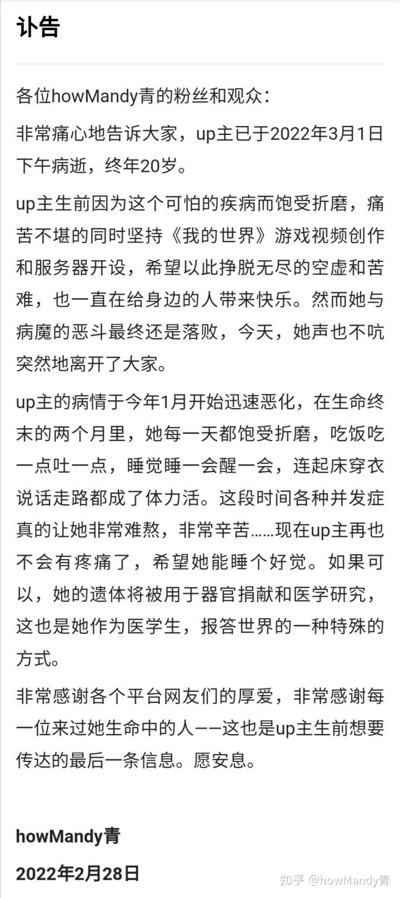
死后13.5小时 现在是2022年3月2日 凌晨4:00。不知具体从哪一分哪一秒起，我开始有了模糊的意识。睁开眼睛的那一刻，我是非常失望的——我竟然真的出现在了抢救室里，从头到身体到大腿，插满了大大小小的管子。抢救室里，各种仪器的报警声此起彼伏，医生护士们忙来忙去，时不时传来“打桩机”的声音（用上打桩机的病人，十有八九是活不了的）。只记得没过两分钟，听见一名护士说“醒了醒了”，就和电视剧里一样。我想微调一下姿态，却发现手被束缚带捆在了床栏上。
我失望透顶，仍然没有一丝丝悔意。原来，我打药的时候，因为药物起效太快，只打了1/4就昏过去了。外加医院很近，同学老师发现及时，这才有了抢救的机会。任何一个条件不满足，我是铁定会G了的。
死后48小时 现在是3月3日下午2点半。我恢复了相对清醒的意识。以下是听我家人口述的——
被120送来的时候，人肯定是昏迷不醒的，120来之前，两位中医的同学为我扎针灸急救。来到抢救室，因为我注射的药物毕竟不是注射液嘛，它属于是一个异物，会引发炎症反应并且干扰凝血功能。当时我的血凝特别的高，D-二聚体就是直接高到几十倍，非常吓人，后来做血液透析直接把血凝管子堵死了。医生说我这样会发展为DIC，一种很严重的并发症，DIC了就意味着一只脚已经踏入了地府的门，医生直接让准备回家吃席。后来嘛没有放弃，紧急抽调外院专家会诊，英明果断地更改治疗方案，做了4次血透。因为我血凝太高，所以用了常规剂量2倍的肝素，导致我全身出血渗血严重，不得不使用硫酸鱼精蛋白中和肝素。
我给自己使用了5种会产生强烈相互作用的药物，医生都说我这个用药很绝，需要一些医学知识才能想到这个配伍，一点活路都没给自己留。其实我自己确实没给自己留后路，得亏我只打进去1/4的药液，这才出乎意料地没死成。
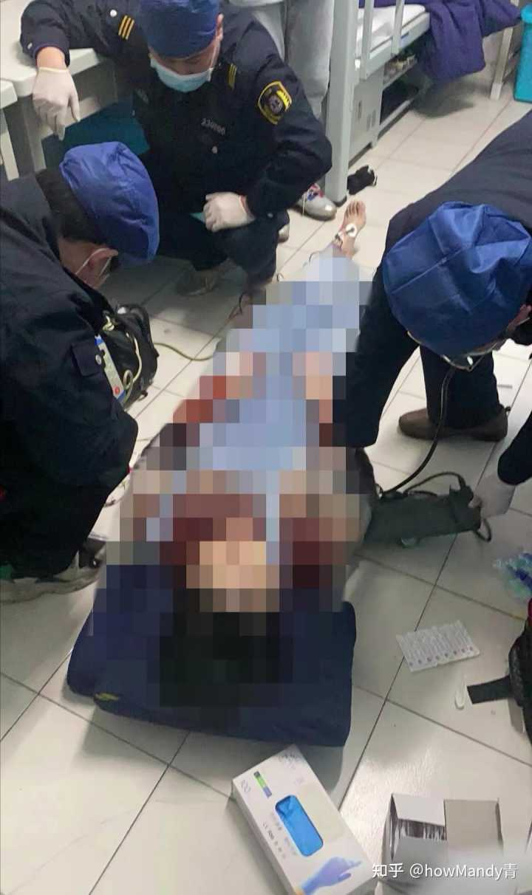
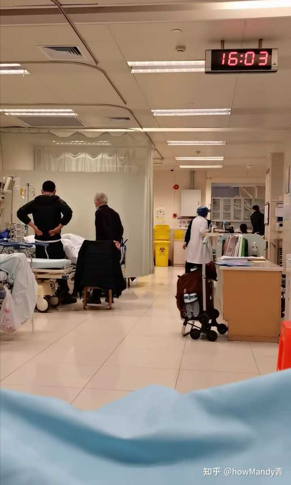
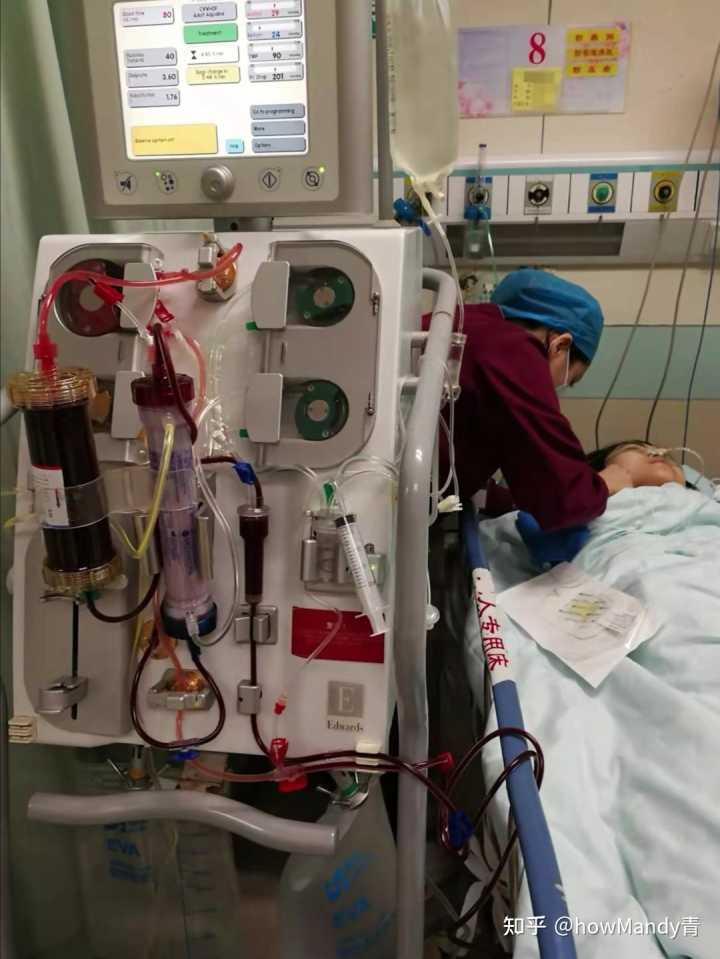
死后50小时 现在是下午4点半。经过抢救室全体医护的全力以赴，奇迹还是发生了，我脱离了危险，转出抢救室，转入了急诊观察病房，接受重症护理。
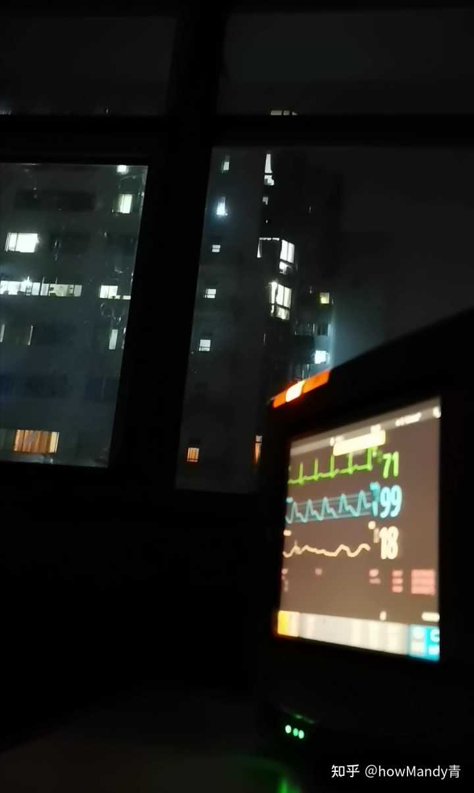
死后4天 现在是3月5日，我的生命体征平稳，可以开放饮食食用流质食物，治疗转为抗炎抗感染为主。
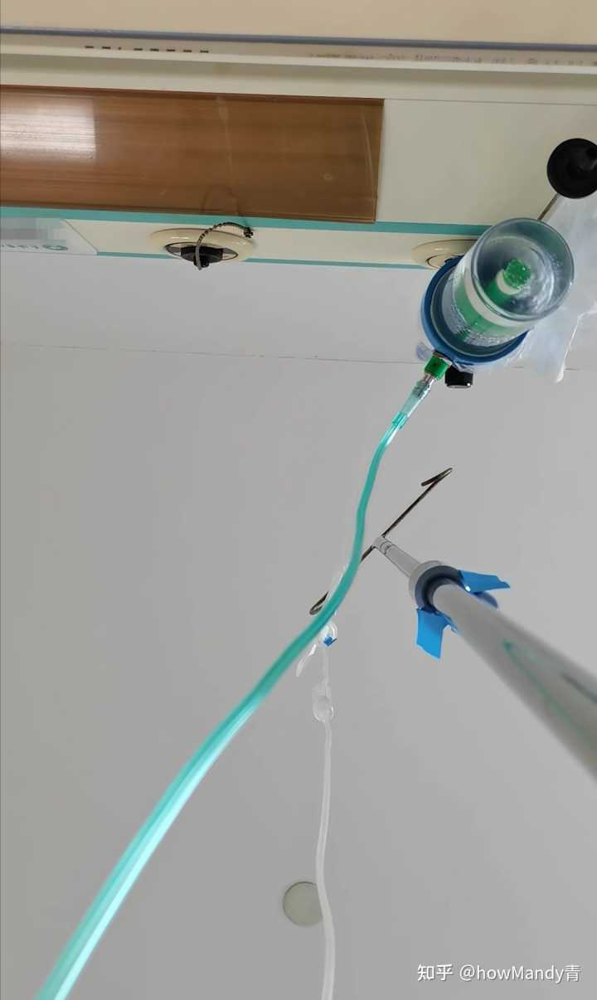
等我能坐起来看手机了，我登录B站，发现一位叫“急诊许一生”的up主艾特我，发了这样一条动态。
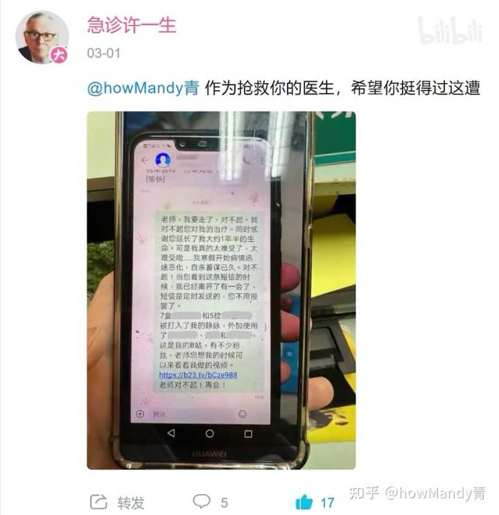
我关注他，发现已经互粉了。许医生在我的那个最后一条动态里面，用评论“实况转播”我的抢救进程，给我的粉丝们一个交代，否则粉丝们会很疑惑我为什么失踪了，不知道我在抢救呢。
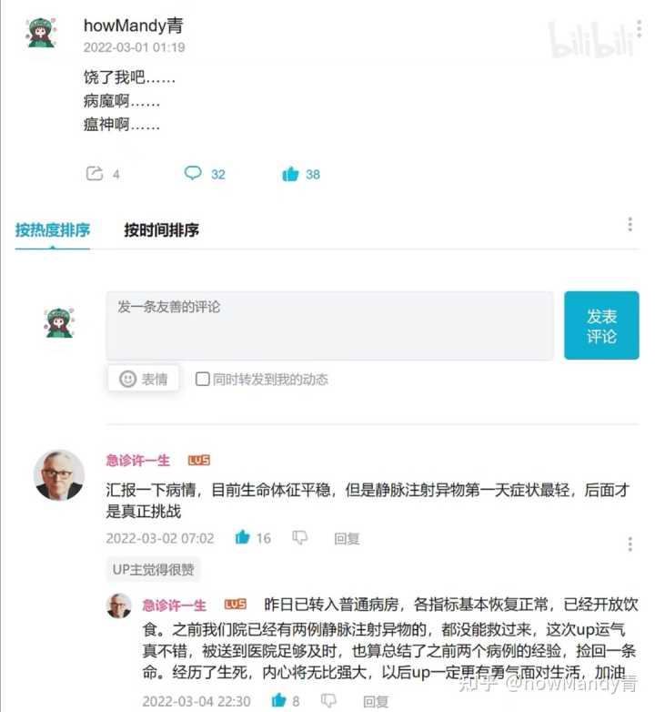
我赶紧发了条动态，给粉丝们也给许医生报个平安。
许医生百忙之中，这么惦记我这么一个普通的病人，我是非常动容的。我明白了一件事，那就是这个世界还有很多人在乎我，包括许医生，包括抢救室的全体医护，包括救我的同学，当然也包括我的家人。既然这么多人这么在乎我，我这次一定得积极配合精神科治疗、好好儿活下去了，这样才对得起他们。之前我完全是放弃治疗的一个心态，想的就是“要不就这样病死吧”。现在我虽然还是难受，还是痛苦，但是有个变化，那就是我想好好治了。
死后9天 今天是3月10日。我下午就可以出院啦。
回到阔别十天的家，见到我的小狗，我的房间。我以为我再也见不到它们了。
晚上，我发布了一个视频，讲的是我康复的全过程，以此感谢许医生和救治我的全体医护。

死后11天 今天是3月12日。我去拜访了我的精神科医生。我以为再也见不到他了。不出意外地，我被建议必须住院治疗。好，我同意。我必须得好好儿治，好好儿活了。
我希望将来像许医生一样，成为一名顶天立地的医者。我的志向是精神科。这才是我的人生价值，我回报世界的方式。
死后12天 现在是3月13日下午14:30，距离我的死，已经整整12天。我再次刷到这个问题，含泪写下了这篇回答……
本回答写于2022年3月13日。以下为最新跟进情况。未尽事宜欢迎评论区留言提问。祝你平安喜乐。
死后1个月零5天 今天是4月6日。上海疫情很严重，今天是我被封在家里的第10天，因此无法去医院住院（能住院的医院也都停诊了）。在家里等得很难受，很难熬。希望2周内疫情能结束，我能解封，医院能恢复就诊。
抢救那边出院之后，3月12号我不是去见了我的精神科医生嘛，他建议我住院治疗但是同时说，医院都停诊不收病人了，让我再等等。没想到，这一等，一个多月已经过去啦。我好想快点住院，快点好起来哇~
BTW，分享一个好玩的东西。我家里的氟西汀胶囊吃完了，今天开始吃氟西汀片剂。第一次吃片剂，辣么大一个药瓶子，打开来居然只有这么几粒药！！（捂脸。上图
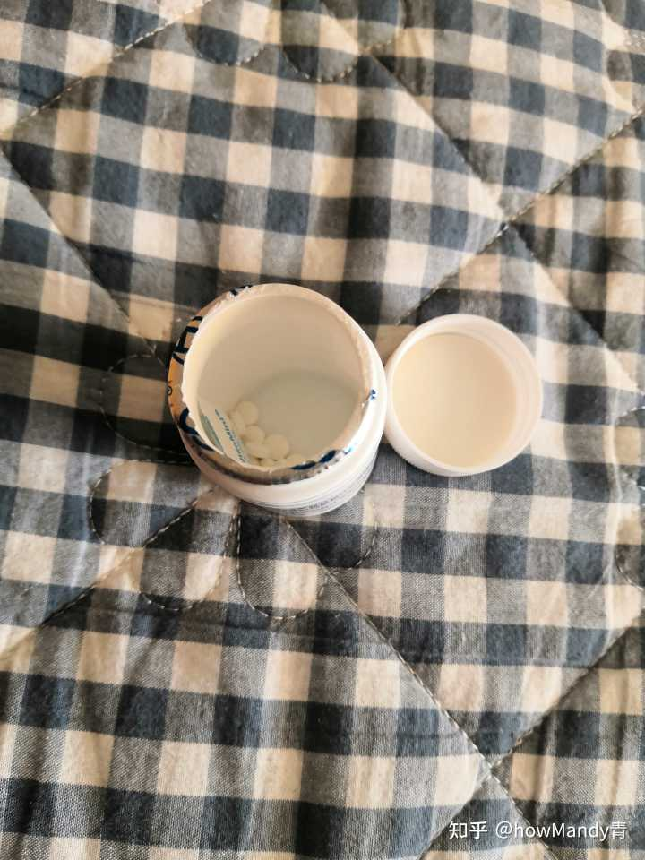
这玩意非常苦的，直接给你在嘴里溶解了，而且回味无穷。。。以后每天早上都要这样苦一下啦呜呜呜X﹏X
死后1个月零23天 今天是4月24日。仍然在家隔离，无法住院。度日如年。